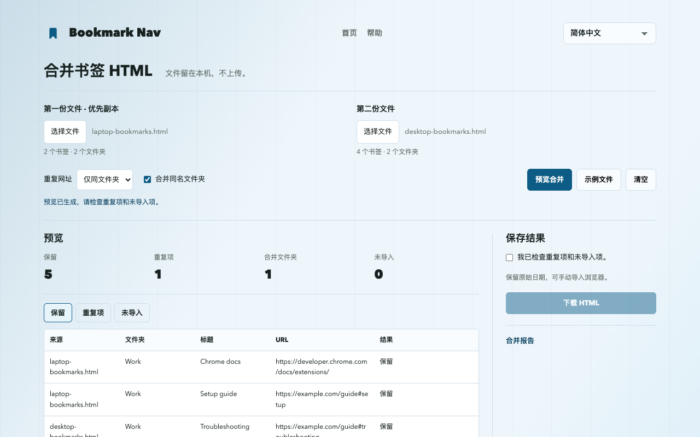

如何合并 Chrome 导出的书签 HTML 文件
合并两份 Chrome 书签导出时，选择两个 HTML 文件，预览重复项，下载合并结果，再导入 Chrome。这是在合并导出文件，不是合并 Chrome 账号或同步库。
合并书签文件导出、合并与导入
- 打开 chrome://bookmarks，在书签管理器菜单中选择“导出书签”。保留原始 HTML 作为备份，再从第二份书签库导出。
- 打开网页版合并工具，选择两份文件。移除重复项时，第一份文件为优先副本。
- 先使用“仅同文件夹”去重，查看保留、重复和未导入项，再决定是否调整规则。
- 确认预览后下载合并 HTML。网站不会直接修改浏览器书签。
- 从 Chrome 书签管理器菜单导入 HTML。建议先用空白测试配置检查结果，避免直接向主书签库添加重复副本。
可复现的六条链接示例
点击工具中的“示例文件”：两份输入共六条链接。默认预览保留五条，移除一条同文件夹重复项。Learning 与 Work 中的相同网址均保留；#setup 与 #troubleshooting 仍是不同链接。

保留哪些内容，跳过哪些条目？
移除重复项时优先保留第一份文件。网址精确匹配，参数、#片段、协议和 www 差异均保留。默认保留不同文件夹中的同网址。
仅合并名称及父级路径相同的文件夹。关闭合并时，每份来源放入独立文件夹，同级重名添加编号，并移除书签栏标记。
下载保留完整层级、受支持网址、标题及可用的 ADD_DATE / LAST_MODIFIED 日期。不包含图标、描述、标签和同步信息。缺失或不支持的网址（含 javascript: 和 data:）列为未导入项，不检查链接是否失效。
备份与浏览器导入限制
保留两份原始导出，并在导入前备份目标浏览器。导入是新增书签，重复导入可能再产生副本；下载的 HTML 不会自动替换现有书签库。
UTF-8 Netscape 书签 HTML。每份最多 10 MiB、25,000 个书签及文件夹、64 层文件夹（不计外层列表）。不支持 JSON 和 plist。
合并结果可能超过输入限制，无法再次用本工具读取。独立来源文件夹增加一层。请保留原始导出。
Chrome 会忽略空文件夹并重设文件夹日期，保留书签标题、网址和添加日期。书签栏标记可能映射到浏览器书签栏。
网页版与扩展导入的区别
网页版无需安装扩展，只下载 HTML。直接追加、备份和校验后撤销已准备在扩展 1.3.1 中，不应假设当前商店版已经包含。请核对已安装版本及“导入与合并”入口。直接追加创建独立文件夹，使用当前日期，而非 HTML 原始日期。
获取 Bookmark Nav常见问题
书签文件会上传吗？
文件仅在当前标签页内存中处理，不上传、不用于分析；刷新或离开会清除已加载文件。下载留在你的设备上。
会合并 Chrome 账号或同步库吗？
不会。工具仅在本机合并两份导出的 HTML；Chrome 同步仍由浏览器设置控制。
日期和空文件夹会保留吗？
保留原始日期，可手动导入浏览器。
Chrome 会忽略空文件夹并重设文件夹日期，保留书签标题、网址和添加日期。书签栏标记可能映射到浏览器书签栏。